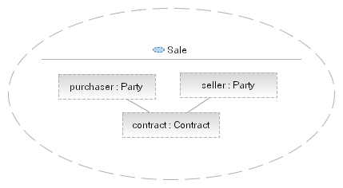
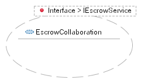
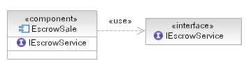

Variability itself takes a number of different forms, any of which may be appropriate and in some cases more than one
form is present in a given situation. Common kinds of variability are:
-
Variability by Type - for example, in the case of our legal contract the variability is based on
the type hierarchy used to represent the concept "Party"; this is a very common form and is easily described using
UML as a class diagram (as shown in the main description).
-
Variability by Role - in this case the type of the element is generally immaterial (or at least of
secondary importance); it is the role it plays that is of value. This type of variability is often found in
pattern development where the pattern should be possible to apply to the broadest set of possibilities and so the
parameters to the pattern are defined in terms of the roles the provided elements play only.
-
Variability of Implementation - In this case the element provided is required to perform
some behavior and so needs to implement a given interface (or more formally a protocol) to be applicable. In such a
case it usual that the container of the common elements describes the interface and either has a template
parameter of the interface type or to require the interface.
Examples
The following diagram demonstrates the notion of variability by role, where we have a new collaboration "Sale" which
denotes the relationship between a seller and purchaser as parties to a contract. In UML it is then possible to create
a Collaboration Occurance which binds the roles "purchaser" and "seller" to actual model elements.

Alternatively, let us look at the process of sale using an escrow service. We capture the required capabilities of any
escrow service as an interface, with a set of operations corresponding to the responsibilities we expect the escrow
service to perform. With this we create a templated collaboration where we use the escrow interface as the type of the
template parameter. Now it is possible to instantiate the template providing any class or component that realizes the
IEscrowService interface.

Finally, we might more simply use a component (or class) to contain our common elements and have it require the
IEscrowService interface using the UML 2.0 <<use>> relationship as shown in the diagram below. This
approach is certainly valuable at a design level as it is also a common programming approach in Component-Based
Development or even just in languages such as Java.

The choice of technique will, as usual, depend on the situation including considerations such as:
-
The kind of variability being expressed, as we have seen above.
-
Whether the element are a part of an analysis, design or implementation model.
-
The skills and expectations of the stakeholders in the model.
|